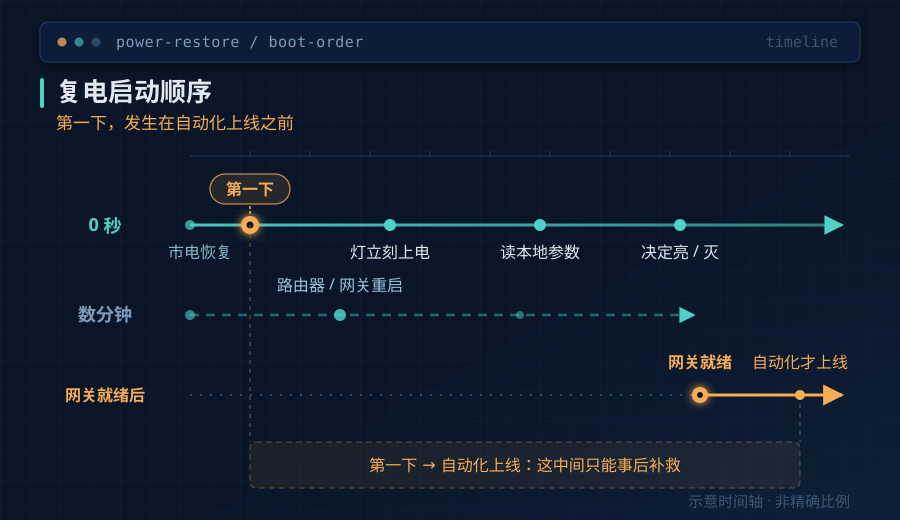
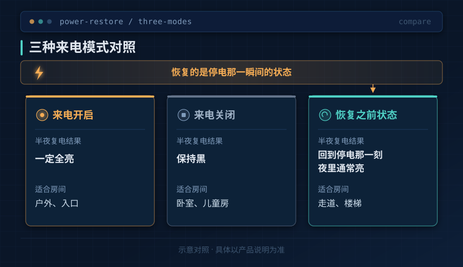
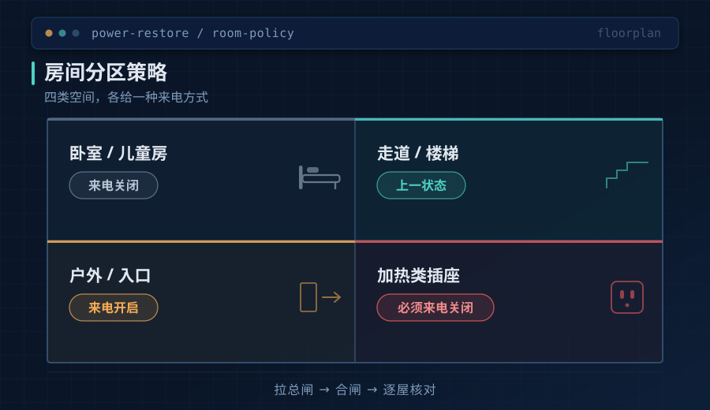

"Every light in the house came on at once."
That is how one user on Sina described their outage. The power had been gone for an hour. When it came back, dozens of devices — in some homes more than a hundred — woke up together. The whole flat lit up, and somebody had to climb out of bed and switch things off one at a time. Curtain motors ran on their own, the speaker announced it had rejoined the network, the printer ran a self-test, and several appliances beeped in chorus. A user on Smzdm with forty-two devices wired into the system wrote up the same night in almost the same words. On Xiaohongshu it was shorter: the whole house lit up when the power came back, and I am done with this.
Twenty years in this trade, and my conclusion has not changed. Nothing is broken. Nobody ever told that lamp what to do when the mains return.
Automation cannot save the first second
A restore is not simultaneous. The bulb wakes first, because a bulb only needs voltage — no network, no gateway, no app. The router and the hub need several minutes to finish booting, and cloud scenes are not online yet when the room is already bright.
So whether a lamp comes on, and how bright, is decided in the first second by the lamp itself or by the controller driving it, and that decision is stored locally on the device. Automation can only patch things afterwards: wait for the light to appear, then send a command to turn it off. At three in the morning, that command arrives too late.

This is also why putting a UPS on the router and the hub solves so little. It keeps the network alive. It does nothing for the lamp, which is wired straight to the mains.
The semantic trap in "restore previous state"
That phrase restores the state at the instant the power failed — not the state you wanted. Outages tend to happen at night or during a typhoon, and at that moment the living room and the corridor lights were on. Restore them faithfully and you get exactly the result people complain about: a house lit up like a showroom at 3 a.m. The logic is not wrong. The sentence was misread.
Mi Home smart switches offer three choices: power-on on, power-on off, and restore previous state. On plenty of devices the factory default is not "off", and if nobody adjusts it during installation, the first restore after commissioning hands you a very bright house.
| Setting | Result at 3 a.m. | Suits |
|---|---|---|
| Power-on on | Always fully lit | Outdoor, entrance |
| Power-on off | Stays dark | Bedroom, kids' room |
| Restore previous state | Returns to the moment of failure, usually lit at night | Corridor, stairs |

If you do not want to be woken by light, the bedrooms and the hallway do not need "memory". They need "power-on off".
The lamp and the hub are not one setting
The same idea travels under different names: power-on behavior, restore state, default state, relay status, or the Chinese 通电默认状态. Hue calls it power-on behavior; Tapo calls it default states. LIFX and the rest of the market share no common vocabulary, so read the spec sheet instead of assuming a label carries over.
Whether a Zigbee lamp exposes the setting at all depends on the device and on the gateway. Not every model has it, and that is a purchasing question, not a configuration one.
Mi bulbs take a few extra steps. In the app, open the bulb, go to settings, then default state. Switch on "turn on after power restore" first, then enable "restore the light before power loss", then switch the first one off again. On models without that entry, set the brightness and colour temperature you want by hand and save them as the default light. The memory lives on the device, so it keeps working with the network down; only a factory reset clears it.
Digital dimming has two more numbers to set
One project in Haiyan taught us this the hard way. After a restore the fixtures went to full output, and every time the bus dropped they jumped erratically. The cause was almost always the same: neither the power-on brightness nor the fail-safe level had been preset.
Commissioning should leave four values behind: power-on brightness, fail-safe level, minimum dim level, and fade-up time. The acceptance check is equally plain. Pull the main breaker, close it again, and watch whether the room returns to the state it was in. Then pull the bus and confirm that every fixture drops to the same safe level rather than to full output. Scenes configured above the driver — Mi Home, Tuya, HarmonyOS — have to be re-run against the configuration table, otherwise the scene values and the defaults fight each other and nobody can tell which one won.
Set it room by room

Bedrooms and kids' rooms exist to be slept in, so the requirement is simple: do not be woken. Choose power-on off, or at most restore previous state. Corridors and stairs are better on restore previous state — low brightness when you get up at night, still low when you come back. Outdoor and entrance circuits can be set to power-on on; it is dark out there anyway.
One category deserves its own line in the table: high-power sockets feeding heaters — hair dryers, irons, induction hobs. Those are always power-on off. State Grid Fujian's own guidance is explicit about it: after an outage, switch off any heating appliance that was running when the power failed, so that an unattended restart cannot start a fire. For a house left empty for months, every appliance goes to power-on off.
Acceptance, and three hard lines
Acceptance is one action. Pull the main breaker, wait, close it, and stand in the room to see which lights come on. If a bulb jumps back to full output, go back to the default-state path above and fix it there.
First hard line: many smart lamps use "toggle the wall switch a few times" as their reset-and-pair sequence. A voltage flicker during a restore can imitate that sequence closely enough to throw a lamp back to its default colour, or drop it off the network entirely. If devices are missing after a restore, wait ten minutes for the gateway to finish booting before you touch anything, then check power and the wall switch. Only re-add the device if it still does not appear, and rename it afterwards — otherwise every automation that referenced the old name is dead.
Second: do not treat smart lamps as emergency lighting. A torch and a battery lamp still belong in the cupboard.
Third: opening a panel, working near live conductors, and insulation testing all carry mains risk. A breaker that keeps tripping is not a switch problem, and swapping the switch will not fix it. Call a licensed electrician.
Three questions before you buy a lamp
Can its power-on behaviour be set, and does the setting survive a power cut? Who actually owns this lamp — its own app, the wall switch, or a gateway scene? And if the gateway never comes up, will it still light the way I need it to?
Those three questions are worth more than two extra features on the box.
FAQ
Q1: I set "restore previous state" and the house still lights up. Why?
Because it restores the moment the power failed, and at that moment the lights were on. If you want darkness at night, choose power-on off.
Q2: Do I have to confirm the setting every time?
No. The power-on setting is stored on the device, works with the network down, and is lost only on a factory reset.
Q3: Will a UPS fix it?
No. A UPS protects the router and the hub. The lamps are on the mains, and they will come on just the same.
An outage and its restore do not test how smart a lamp is. They test whether the person who installed it thought about three o'clock in the morning on your behalf.